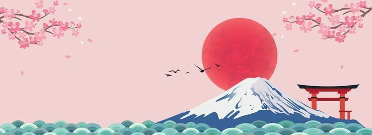
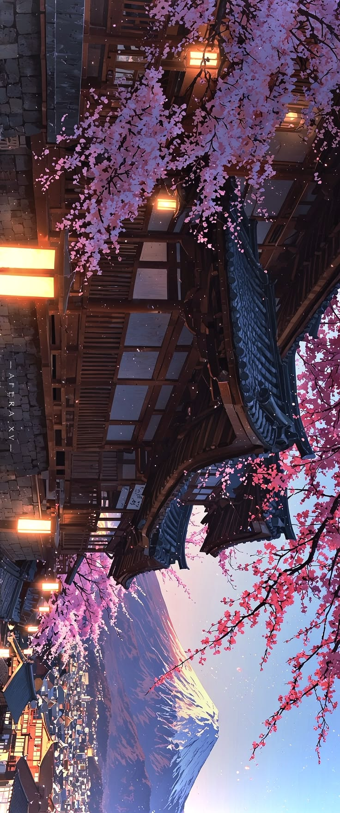

Um guia introdutório para te guiar em uma jornada de descobertas pelo Japão.

O Japão é um país rico em cultura, tradições e paisagens deslumbrantes, conhecido por sua capacidade única de equilibrar o antigo e o moderno. Ao mesmo tempo em que preserva costumes milenares, templos históricos e festivais tradicionais, o país também se destaca como uma das nações mais avançadas tecnologicamente do mundo. Essa combinação cria uma experiência singular para qualquer visitante. Este guia foi criado com o objetivo de ajudá-lo a explorar tudo de melhor que o Japão tem a oferecer. Ao longo do site, você encontrará informações sobre cidades importantes, pontos turísticos famosos, aspectos culturais e curiosidades que tornam o país tão fascinante. Desde as ruas movimentadas de Tóquio até a atmosfera histórica de Quioto, cada destino apresenta uma identidade própria e experiências únicas. Além disso, o Japão é reconhecido por sua organização, segurança e hospitalidade, fatores que tornam a viagem ainda mais agradável. A culinária também é um grande destaque, oferecendo desde pratos tradicionais até experiências gastronômicas modernas. Ao explorar este guia, o visitante poderá ter uma visão geral do país e se preparar melhor para uma possível viagem ou simplesmente ampliar seu conhecimento sobre essa cultura tão rica e diversa.
Tóquio, a capital do Japão, é uma das metrópoles mais fascinantes e contrastantes do mundo. Uma cidade onde o ultramoderno convive harmoniosamente com tradições centenárias, criando uma experiência única que encanta milhões de visitantes todos os anos. Com mais de 37 milhões de habitantes na sua região metropolitana, Tóquio é um verdadeiro espetáculo urbano. Seus arranha-céus futuristas, como os da região de Shinjuku e Shibuya, contrastam com templos antigos e jardins zen que parecem parados no tempo. É possível caminhar por ruas iluminadas por neon vibrante e, minutos depois, encontrar-se em um templo sereno como o Senso-ji, no bairro histórico de Asakusa. A cidade oferece uma energia inesgotável: cruzamentos movimentados como o de Shibuya, lojas de departamento de luxo em Ginza, mercados de rua agitados, uma gastronomia de classe mundial (com o maior número de restaurantes estrelados do mundo) e uma vida noturna que nunca para. De izakayas aconchegantes a rooftops com vista panorâmica, Tóquio sabe como entreter seus visitantes 24 horas por dia.
Quioto, antiga capital do Japão, é uma das cidades mais encantadoras e preservadas do país. Conhecida por suas tradições milenares, a cidade equilibra perfeitamente o charme histórico com uma atmosfera serena e acolhedora. Com mais de 2.000 templos e santuários, incluindo o icônico Templo Dourado (Kinkaku-ji) e o deslumbrante Fushimi Inari com seus milhares de portões vermelhos, Quioto é um verdadeiro museu vivo da cultura japonesa. Ruas de paralelepípedos no bairro de Gion, casas de chá tradicionais, geishas e jardins zen criam um cenário que parece saído de outra época. Além da rica herança cultural, a cidade oferece experiências inesquecíveis como o hanami (contemplação das cerejeiras) na primavera, festivais tradicionais e uma gastronomia refinada, famosa pelos kaiseki e pela culinária vegetariana dos templos. Mais calma e reflexiva que Tóquio, Quioto é o destino ideal para quem busca conexão com a história, a espiritualidade e a beleza autêntica do Japão.
Osaka, conhecida como a “cozinha do Japão”, é uma cidade vibrante, descontraída e cheia de energia. Diferente da elegância de Tóquio e da serenidade de Quioto, Osaka conquista os visitantes com sua gastronomia incrível, seu povo extrovertido e sua atmosfera animada. A cidade mistura modernidade com toques históricos, destacando-se pelo imponente Castelo de Osaka, um dos símbolos mais importantes do Japão. Suas ruas movimentadas, como Dotonbori, brilham com letreiros neon, canais iluminados e uma vida noturna agitada, onde é impossível passar fome: takoyaki, okonomiyaki, kushikatsu e uma infinidade de pratos de rua fazem de Osaka um paraíso para os amantes da comida. Além da gastronomia, Osaka oferece diversão para todas as idades com o Universal Studios Japan, o Aquário Kaiyukan e bairros comerciais vibrantes como Shinsaibashi. Com um jeito mais leve e divertido que as outras grandes cidades japonesas, Osaka é perfeita para quem busca boa comida, entretenimento e uma experiência autêntica e descontraída no Japão.
O Monte Fuji é o símbolo mais icônico e reconhecido do Japão. Com 3.776 metros de altitude, este vulcão ativo possui um cone perfeitamente simétrico que se destaca contra o céu, frequentemente retratado em pinturas, gravuras ukiyo-e e literatura japonesa ao longo dos séculos. Coberto de neve durante boa parte do ano, o Fuji-san oferece paisagens de tirar o fôlego, especialmente ao nascer e pôr do sol. Ele pode ser admirado de longe a partir de cidades como Tóquio, Hakone e Kawaguchiko, mas a experiência mais marcante é subir até o cume durante a temporada oficial de escalada, entre julho e setembro. Além de sua impressionante beleza natural, o Monte Fuji é considerado um lugar sagrado no xintoísmo e foi declarado Patrimônio Mundial da UNESCO em 2013. Atrai milhares de peregrinos e turistas todos os anos. Seja contemplando sua silhueta majestosa de longe ou desafiando-se a chegar ao topo para ver o nascer do sol, o Monte Fuji representa o espírito do Japão: grandioso, sereno e inesquecível.
O Santuário Meiji (Meiji Jingu) é um dos santuários xintoístas mais importantes e visitados de Tóquio. Localizado em meio a um vasto bosque de árvores centenárias no coração da metrópole, oferece um contraste surpreendente entre a agitação urbana e uma atmosfera de profunda serenidade. Construído em 1920 em homenagem ao Imperador Meiji e à Imperatriz Shoken, o santuário simboliza a transição do Japão feudal para a era moderna. Seu imponente torii de madeira (um dos maiores do Japão), o caminho ladeado por árvores altas e o salão principal de arquitetura tradicional criam uma experiência espiritual marcante. Além de sua beleza arquitetônica, o Santuário Meiji é palco de tradições vivas: casamentos xintoístas, festivais sazonais e o famoso Festival de Ano Novo, que atrai milhões de visitantes. É um dos pontos turísticos mais queridos pelos japoneses e turistas, ideal para quem busca tranquilidade, cultura e uma conexão com a história recente do Japão.
O Pavilhão Dourado (Kinkaku-ji) é um dos templos mais icônicos e fotografados de Quioto. Totalmente revestido em folhas de ouro, o templo brilha intensamente sobre o espelho d’água de seu jardim, criando uma das imagens mais belas e famosas do Japão. Construído no século XIV como vila de repouso do xogum Ashikaga Yoshimitsu, o pavilhão foi convertido em templo zen após sua morte. Sua arquitetura elegante combina três estilos diferentes em um único edifício: o térreo no estilo shinden, o primeiro andar no estilo buke e o segundo andar no estilo zen, tudo coroado por uma fênix dourada no topo. Cercado por um jardim cuidadosamente projetado com pinheiros, lagos e pedras, o Kinkaku-ji transmite paz e harmonia, especialmente quando o dourado reflete na água em dias ensolarados. É um símbolo poderoso da estética japonesa e um dos pontos turísticos mais visitados de Quioto.